library(tidyverse)
library(car) # Type-II Anova
library(sandwich) # robust vcov (HC3)
library(lmtest) # coeftest with robust SEs
library(emmeans) # group means & CI
library(broom) # tidying
library(tibble)
data_path <- "wide-to-long_with_wood_density.csv"
dat <- readr::read_csv(data_path, show_col_types = FALSE)
dat <- dat %>%
mutate(
method = tolower(method),
scale = tolower(as.character(scale)),
treatment = as.character(treatment),
heating_condition = tolower(as.character(heating_condition)),
distance = suppressWarnings(as.numeric(distance))
)
# Exclude unheated
dat_filt <- dat %>% filter(!treatment %in% c("Unheated","unheated"))Silcrete Edge Sharpness: Heating Technique Only (No Wood-Density Covariate)
1 Overview
This document repeats the full analysis without using wood density as a covariate.
All models are of the form:
[ ]
Accordingly: - Results focus on the main effect of heating technique (ember vs sand). - Group means (± 95% CI) are estimated via emmeans (no adjustment for covariates). - We produce figures showing group means with 95% CI for each analysis subset. - Unheated observations are excluded, as before.
2 Packages & Data
3 Helper functions
fit_ht_model <- function(df) {
df <- df %>% drop_na(average_curvature, heating_condition)
if (nrow(df) < 5) return(NULL)
m <- lm(average_curvature ~ heating_condition, data = df)
a2 <- tryCatch(
car::Anova(m, type = 2, white.adjust = "hc3"),
error = function(e) car::Anova(m, type = 2)
)
list(model = m, anova2 = a2)
}
tidy_anova <- function(a2) {
at <- as.data.frame(a2)
at$term <- rownames(at); rownames(at) <- NULL
at %>% select(term, everything())
}
emm_ht <- function(mdl) {
em <- emmeans::emmeans(mdl, specs = ~ heating_condition, type = "response")
as.data.frame(summary(em)) %>%
rename(mean = emmean, ci_low = lower.CL, ci_high = upper.CL)
}
plot_means <- function(df, mdl, title) {
# Pull emmeans for plotting
em <- emm_ht(mdl) %>% mutate(heating_condition = as.character(heating_condition))
ggplot(em, aes(x = heating_condition, y = mean, colour = heating_condition)) +
geom_point(size = 3) +
geom_errorbar(aes(ymin = ci_low, ymax = ci_high), width = 0.15) +
labs(x = "Heating technique", y = "Edge sharpness (average curvature)",
title = title, colour = "Heating") +
theme_minimal(base_size = 12) +
theme(legend.position = "none")
}
run_block <- function(df, title) {
res <- fit_ht_model(df)
if (is.null(res)) return(NULL)
m <- res$model; a2 <- res$anova2
print(tidy_anova(a2))
print(lmtest::coeftest(m, vcov = sandwich::vcovHC(m, type = "HC3")))
print(emm_ht(m))
plot_means(df, m, title)
}4 NEW method (10 µm)
new10 <- dat_filt %>% filter(method == "new method", scale == "10um")
run_block(new10, "NEW method • 10µm") term Df F Pr(>F)
1 heating_condition 1 11.49888 0.001259033
2 Residuals 58 NA NA
t test of coefficients:
Estimate Std. Error t value Pr(>|t|)
(Intercept) 91.1845 2.9580 30.826 < 2.2e-16 ***
heating_conditionsand -15.8720 4.6806 -3.391 0.001259 **
---
Signif. codes: 0 '***' 0.001 '**' 0.01 '*' 0.05 '.' 0.1 ' ' 1
heating_condition mean SE df ci_low ci_high
ember 91.18454 3.623361 58 83.93159 98.43748
sand 75.31256 3.168538 58 68.97004 81.65507
Confidence level used: 0.95 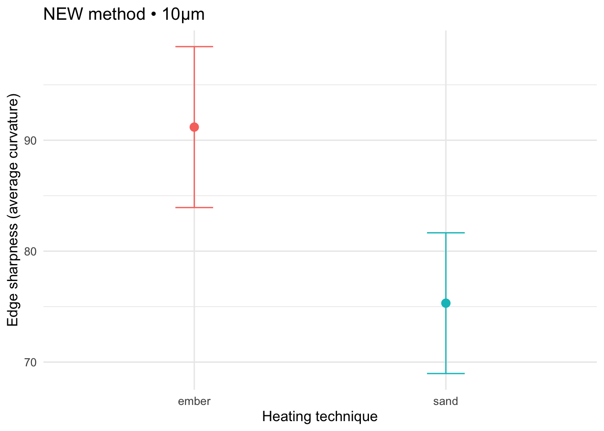
5 NEW method (20 µm)
new20 <- dat_filt %>% filter(method == "new method", scale == "20um")
run_block(new20, "NEW method • 20µm") term Df F Pr(>F)
1 heating_condition 1 13.02252 0.0006423686
2 Residuals 58 NA NA
t test of coefficients:
Estimate Std. Error t value Pr(>|t|)
(Intercept) 71.8473 2.8391 25.3064 < 2.2e-16 ***
heating_conditionsand -14.1137 3.9110 -3.6087 0.0006424 ***
---
Signif. codes: 0 '***' 0.001 '**' 0.01 '*' 0.05 '.' 0.1 ' ' 1
heating_condition mean SE df ci_low ci_high
ember 71.84728 2.926780 58 65.98869 77.70586
sand 57.73359 2.559395 58 52.61040 62.85677
Confidence level used: 0.95 
6 OLD method — 8 combinations (distance × scale)
old_combos <- expand.grid(
scale = c("10um","20um"),
distance = c(0.1, 0.5, 1.0, 2.0),
stringsAsFactors = FALSE
)
if (!exists("old_anova_results")) old_anova_results <- list()
if (!exists("adj_means_all")) adj_means_all <- list()
for (i in seq_len(nrow(old_combos))) {
sc <- old_combos$scale[i]
disti <- old_combos$distance[i]
dfi <- dat_filt %>%
filter(method == "old method", scale == sc, distance == disti) %>%
drop_na(average_curvature, heating_condition)
cat("\n\n## OLD method • ", sc, " • distance ", disti, "\n", sep = "")
res <- fit_ht_model(dfi)
if (is.null(res)) next
# print tables + plot
print(tidy_anova(res$anova2))
print(lmtest::coeftest(res$model, vcov = sandwich::vcovHC(res$model, type = "HC3")))
em <- emm_ht(res$model); print(em)
print(plot_means(dfi, res$model, paste0("OLD method • ", sc, " • distance ", disti)))
# store means for summary
adj_means_all[[length(adj_means_all)+1]] <- em %>%
mutate(method = "old method", scale = sc, distance = disti)
}
## OLD method • 10um • distance 0.1
term Df F Pr(>F)
1 heating_condition 1 0.05444313 0.8163263
2 Residuals 58 NA NA
t test of coefficients:
Estimate Std. Error t value Pr(>|t|)
(Intercept) 19.5874 1.4635 13.3836 <2e-16 ***
heating_conditionsand 0.4477 1.9187 0.2333 0.8163
---
Signif. codes: 0 '***' 0.001 '**' 0.01 '*' 0.05 '.' 0.1 ' ' 1
heating_condition mean SE df ci_low ci_high
ember 19.58736 1.414073 58 16.75679 22.41794
sand 20.03506 1.236571 58 17.55980 22.51033
Confidence level used: 0.95 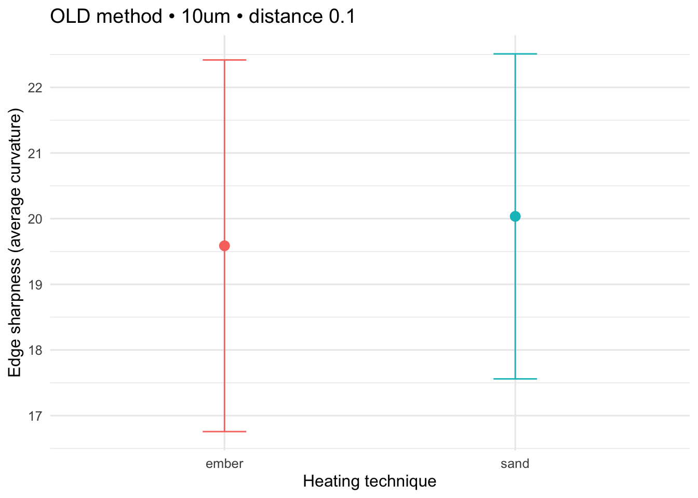
## OLD method • 20um • distance 0.1
term Df F Pr(>F)
1 heating_condition 1 0.3287352 0.5686213
2 Residuals 58 NA NA
t test of coefficients:
Estimate Std. Error t value Pr(>|t|)
(Intercept) 15.14096 1.04149 14.5377 <2e-16 ***
heating_conditionsand -0.76435 1.33312 -0.5734 0.5686
---
Signif. codes: 0 '***' 0.001 '**' 0.01 '*' 0.05 '.' 0.1 ' ' 1
heating_condition mean SE df ci_low ci_high
ember 15.14096 0.9744994 58 13.19028 17.09163
sand 14.37661 0.8521750 58 12.67079 16.08242
Confidence level used: 0.95 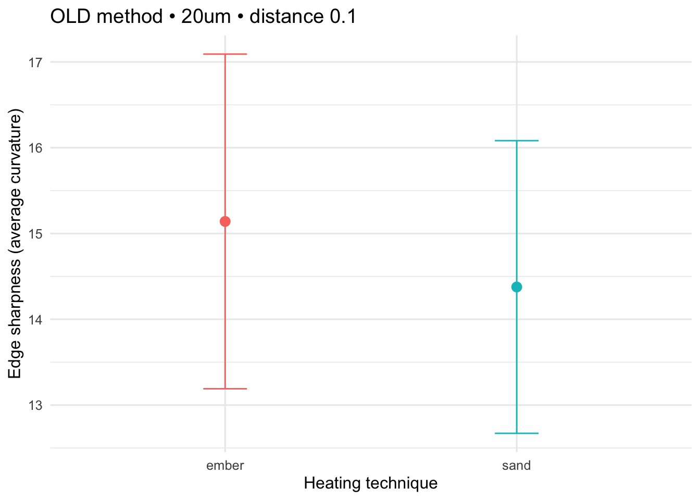
## OLD method • 10um • distance 0.5
term Df F Pr(>F)
1 heating_condition 1 4.005906 0.05002676
2 Residuals 58 NA NA
t test of coefficients:
Estimate Std. Error t value Pr(>|t|)
(Intercept) 9.52479 0.92389 10.3094 9.914e-15 ***
heating_conditionsand 2.60804 1.30306 2.0015 0.05003 .
---
Signif. codes: 0 '***' 0.001 '**' 0.01 '*' 0.05 '.' 0.1 ' ' 1
heating_condition mean SE df ci_low ci_high
ember 9.524786 0.9816008 58 7.559899 11.48967
sand 12.132827 0.8583850 58 10.414582 13.85107
Confidence level used: 0.95 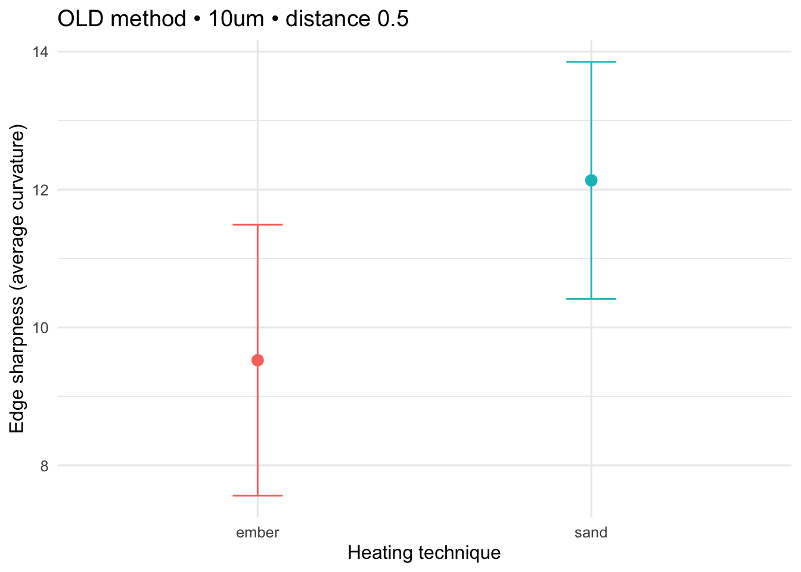
## OLD method • 20um • distance 0.5
term Df F Pr(>F)
1 heating_condition 1 3.416923 0.06963091
2 Residuals 58 NA NA
t test of coefficients:
Estimate Std. Error t value Pr(>|t|)
(Intercept) 6.56219 0.62305 10.5324 4.383e-15 ***
heating_conditionsand 1.67199 0.90452 1.8485 0.06963 .
---
Signif. codes: 0 '***' 0.001 '**' 0.01 '*' 0.05 '.' 0.1 ' ' 1
heating_condition mean SE df ci_low ci_high
ember 6.562189 0.6865746 58 5.187861 7.936518
sand 8.234182 0.6003920 58 7.032367 9.435997
Confidence level used: 0.95 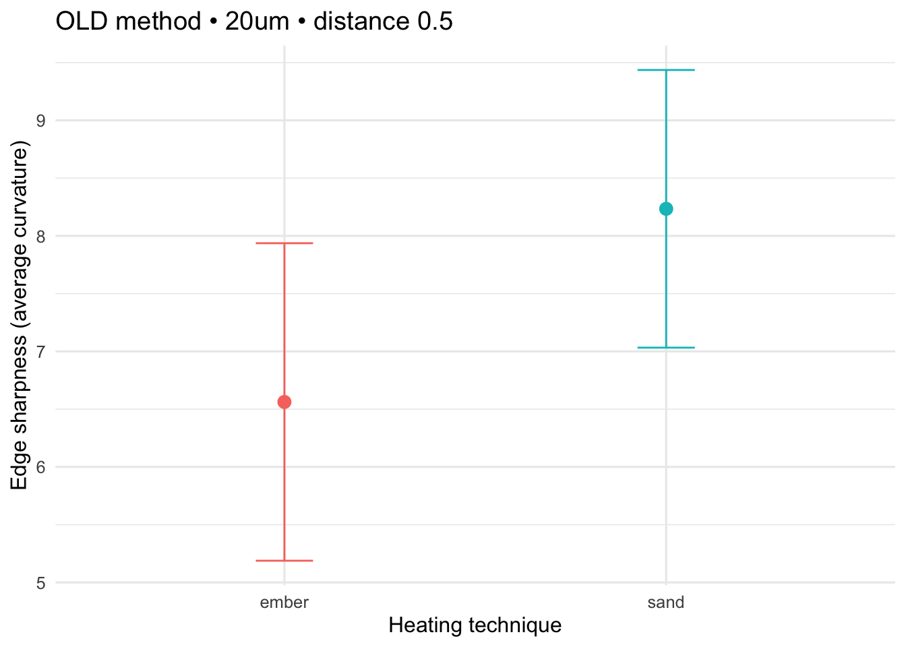
## OLD method • 10um • distance 1
term Df F Pr(>F)
1 heating_condition 1 8.173403 0.005896847
2 Residuals 58 NA NA
t test of coefficients:
Estimate Std. Error t value Pr(>|t|)
(Intercept) 7.82582 0.81038 9.6570 1.113e-13 ***
heating_conditionsand 3.63866 1.27274 2.8589 0.005897 **
---
Signif. codes: 0 '***' 0.001 '**' 0.01 '*' 0.05 '.' 0.1 ' ' 1
heating_condition mean SE df ci_low ci_high
ember 7.825824 0.9837267 58 5.856681 9.794967
sand 11.464479 0.8602440 58 9.742514 13.186445
Confidence level used: 0.95 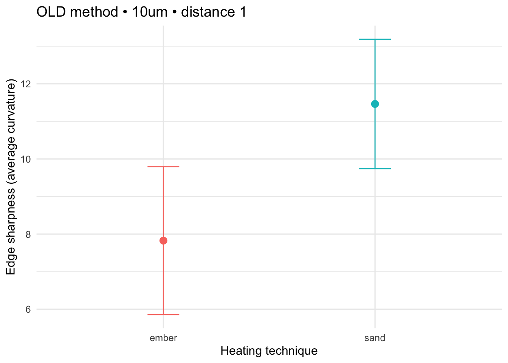
## OLD method • 20um • distance 1
term Df F Pr(>F)
1 heating_condition 1 7.453918 0.008368752
2 Residuals 58 NA NA
t test of coefficients:
Estimate Std. Error t value Pr(>|t|)
(Intercept) 5.14427 0.55014 9.3508 3.515e-13 ***
heating_conditionsand 2.41762 0.88551 2.7302 0.008369 **
---
Signif. codes: 0 '***' 0.001 '**' 0.01 '*' 0.05 '.' 0.1 ' ' 1
heating_condition mean SE df ci_low ci_high
ember 5.144271 0.6878501 58 3.767390 6.521153
sand 7.561892 0.6015075 58 6.357844 8.765940
Confidence level used: 0.95 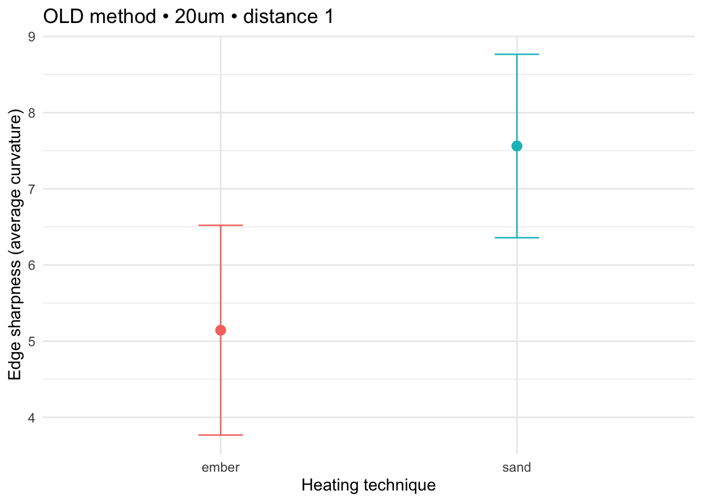
## OLD method • 10um • distance 2
term Df F Pr(>F)
1 heating_condition 1 8.404436 0.005276919
2 Residuals 58 NA NA
t test of coefficients:
Estimate Std. Error t value Pr(>|t|)
(Intercept) 7.28436 0.70671 10.307 9.988e-15 ***
heating_conditionsand 3.03514 1.04695 2.899 0.005277 **
---
Signif. codes: 0 '***' 0.001 '**' 0.01 '*' 0.05 '.' 0.1 ' ' 1
heating_condition mean SE df ci_low ci_high
ember 7.284355 0.7986662 58 5.685651 8.883059
sand 10.319493 0.6984133 58 8.921466 11.717519
Confidence level used: 0.95 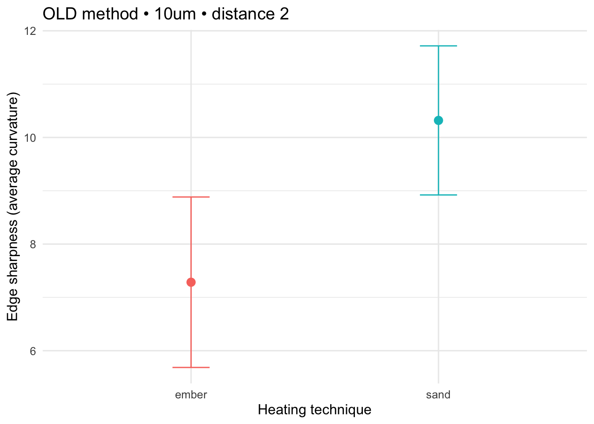
## OLD method • 20um • distance 2
term Df F Pr(>F)
1 heating_condition 1 7.298452 0.009034225
2 Residuals 58 NA NA
t test of coefficients:
Estimate Std. Error t value Pr(>|t|)
(Intercept) 4.66089 0.49338 9.4468 2.449e-13 ***
heating_conditionsand 2.02045 0.74788 2.7016 0.009034 **
---
Signif. codes: 0 '***' 0.001 '**' 0.01 '*' 0.05 '.' 0.1 ' ' 1
heating_condition mean SE df ci_low ci_high
ember 4.660887 0.5736000 58 3.512702 5.809072
sand 6.681337 0.5015986 58 5.677278 7.685395
Confidence level used: 0.95 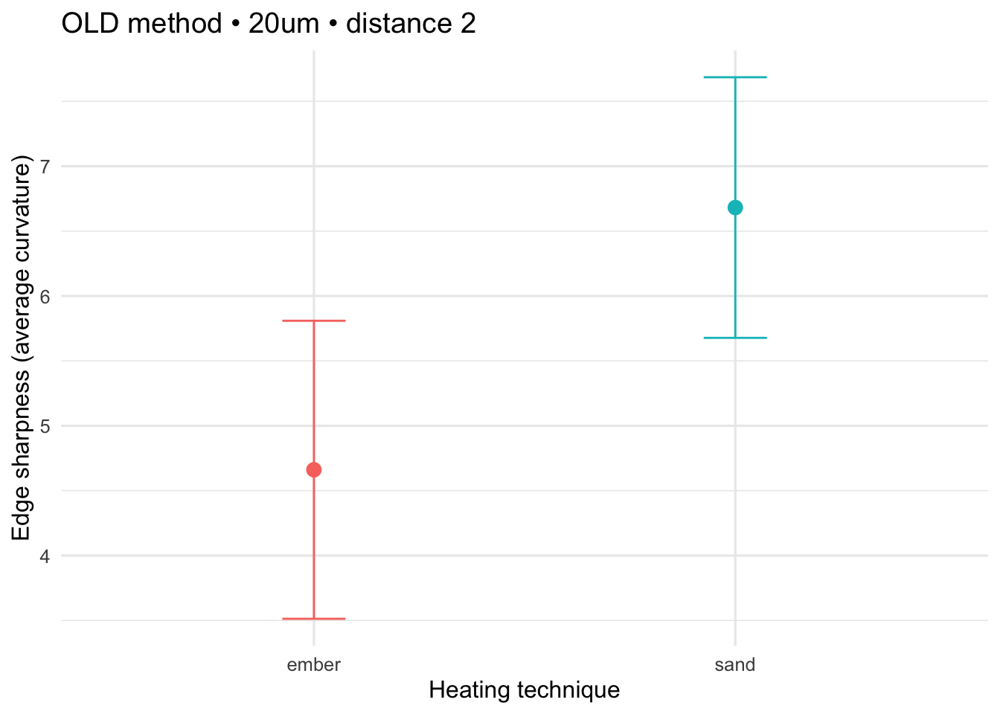
adj_means_old <- {
tmp <- get0("adj_means_all", ifnotfound = list())
if (length(tmp) > 0) dplyr::bind_rows(tmp) else tibble::tibble(
heating_condition = character(),
mean = double(),
ci_low = double(),
ci_high = double(),
method = character(),
scale = character(),
distance = character()
)
}6.1 Summary figure (OLD method only)
if (nrow(adj_means_old) > 0) {
ggplot(adj_means_old,
aes(x = factor(distance), y = mean,
group = interaction(heating_condition, scale),
colour = heating_condition, shape = scale)) +
geom_point(position = position_dodge(width = 0.3), size = 2.5) +
geom_line(position = position_dodge(width = 0.3)) +
geom_errorbar(aes(ymin = ci_low, ymax = ci_high),
width = 0.1, position = position_dodge(width = 0.3)) +
labs(x = "Distance (cm)", y = "Mean edge sharpness",
title = "Group means ±95% CI by heating condition (OLD method)",
colour = "Heating", shape = "Scale") +
theme_minimal(base_size = 12)
}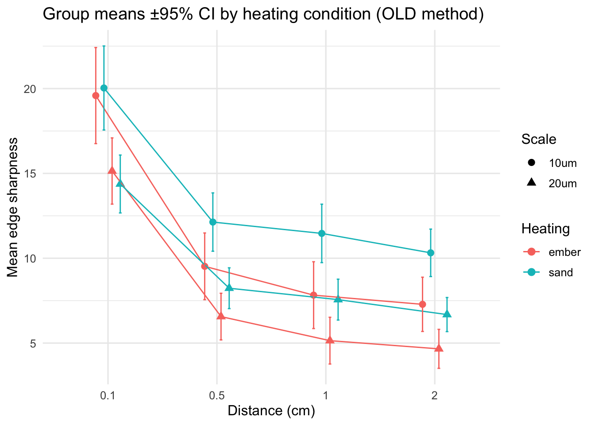
7 Combined comparison: NEW vs OLD
# NEW method means
new10_res <- fit_ht_model(new10)
new20_res <- fit_ht_model(new20)
adj_means_new <- bind_rows(
if (!is.null(new10_res)) emm_ht(new10_res$model) %>% mutate(method = "new method", scale = "10um", distance = "—"),
if (!is.null(new20_res)) emm_ht(new20_res$model) %>% mutate(method = "new method", scale = "20um", distance = "—")
)
# Harmonize distance type
adj_means_old <- adj_means_old %>% mutate(distance = as.character(distance))
adj_means_all_methods <- bind_rows(adj_means_new, adj_means_old)
if (nrow(adj_means_all_methods) > 0) {
ggplot(adj_means_all_methods,
aes(x = factor(distance, levels = c("—","0.1","0.5","1","2")),
y = mean,
colour = heating_condition, shape = scale)) +
geom_point(position = position_dodge(width = 0.4), size = 2.5) +
geom_line(aes(group = interaction(heating_condition, scale, method)),
position = position_dodge(width = 0.4)) +
geom_errorbar(aes(ymin = ci_low, ymax = ci_high),
width = 0.12, position = position_dodge(width = 0.4)) +
facet_wrap(~ method, scales = "free_x") +
labs(x = "Distance (cm) — OLD method; ‘—’ for NEW method",
y = "Mean edge sharpness",
title = "Heating technique effect (no covariates): NEW vs OLD method",
colour = "Heating", shape = "Scale") +
theme_minimal(base_size = 12)
}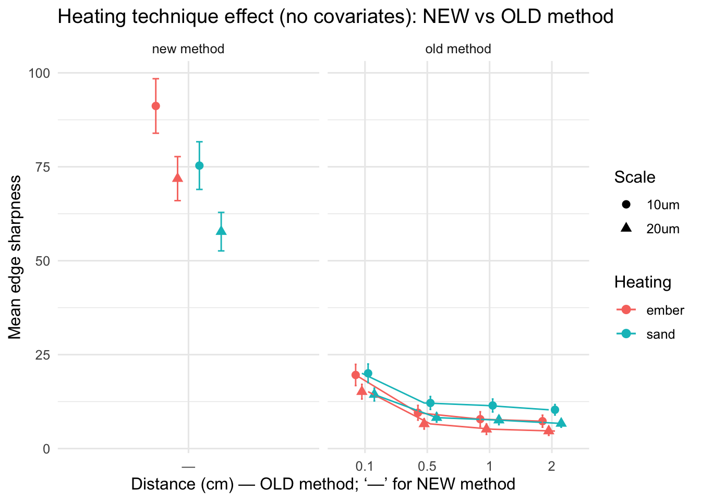